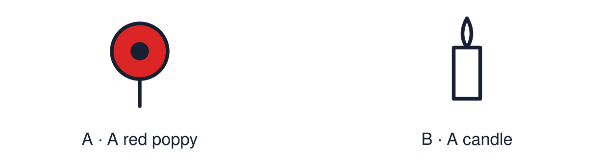

Arrival choices
Previous lesson reminder:

Start with 1 and 2. Try 3 and 4 when ready. Reading and exact scribing are available.
1 In the model answer, which sentence is the evidence?
Support: Use the reminder strip or talk it through with an adult.
2 Which meaning fits remembrance?
Support: Choose: Taking time to remember people and events OR Quiet thinking about something that matters.
3 Give one similarity or difference between the two responses.
Support: Use the model evidence anchor B, C or read one relevant card together.
4 Is classroom reflection the same as worship?
Support: Give a reason when ready.
Stretch: use a precise example or explain which detail supports your answer.
Evidence cards
Read, point or listen. Keep the source label with any detail you use.
A Remembrance in the UK
On Remembrance Sunday and 11 November many people keep two minutes of silence. The poppy is a symbol of remembrance and of hope for a peaceful future.
Source: Authored summary; see Royal British Legion, The poppy
Limit: Wearing a poppy is a personal choice.
B A Christian response
Fictional source: “At our service we pray for those who died and for peace. I believe they are in God’s care, which gives me hope.”
Source: Authored source
Limit: This is one person's view. Others who share the worldview may describe it differently.
C A Humanist response
Fictional source: “I don’t pray, but I stand in silence. People live on in what they did and in our memories. Remembering should make us work to prevent war.”
Source: Authored source
Limit: This is one person's view. Others who share the worldview may describe it differently.
D Reflection is not worship
In class, reflection is quiet thinking. Nobody is asked to pray or to share a personal loss.
Source: Authored classroom rules
Limit: A quiet alternative is always available.
Shared investigation
1. Sort each statement: similarity or difference between the two responses.
2. Support one with a quotation from a source.
Work with a partner or adult, or use your own table. One person suggests; the other checks the evidence. Swap after one turn. Passing is allowed.
Move or match the cards
| Cards to use |
|---|
| Both hope for peace |
| Prayer is part of remembering |
| Both keep silence to remember |
Possible labels: Difference / Similarity
Support: Use the glossary and one chunk of evidence. Plan the claim and supporting detail before explaining.
Further challenge: Explain how belief about life after death changes the meaning of remembrance.
Supported independent task
Complete this route only. Compare how two worldviews may respond to remembrance or peace.
1. Choose one similarity card.
2. Point to the words in each source that show it.
3. Say or finish: Both ___.
Support: Use the glossary and one chunk of evidence. Plan the claim and supporting detail before explaining. Complete the organiser one space at a time. Both ___. However, ___ whereas ___.
An adult may read or scribe your exact response. They should not choose the answer.
Standard independent task
Complete this route only. Compare how two worldviews may respond to remembrance or peace.
1. Complete a short comparison of the two responses.
2. Include one similarity and one difference.
3. Link each to a source.
Support: Both ___. However, ___ whereas ___.
Check the required evidence and revise one detail.
Stretch independent task
Complete this route only. Compare how two worldviews may respond to remembrance or peace.
1. Compare the two responses using quotations.
2. Explain the belief behind one difference.
3. Or create a reflection and annotate its evidence.
Support: Choose the evidence independently. Use the frame only if it helps.
Explain how belief about life after death changes the meaning of remembrance.
Exit ticket
Choose a response mode. You may give your answers privately to an adult.
Give one similarity or difference between the two responses.
Is classroom reflection the same as worship?
Support: Both ___. However, ___ whereas ___.
Further challenge: Explain how belief about life after death changes the meaning of remembrance.